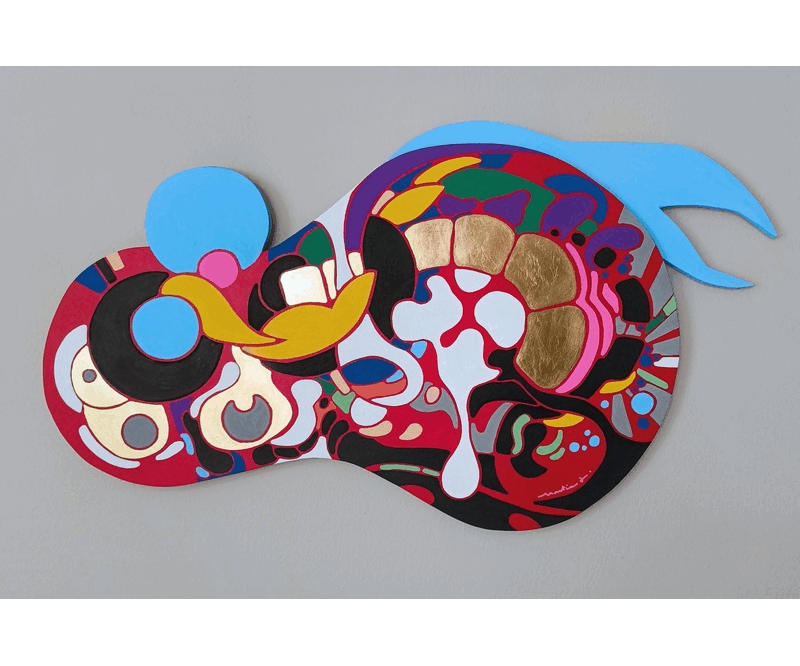

Martin J.

Biography
My full name is Martin Jambon.
I'm a French artist, programmer, and scientist living in Palo
Alto, California. Born in Orléans in 1977, I studied biology and
computer science before moving to California in 2004. My art career
started accidentally in 2022 after I turned my old kitchen table into a
permanent art workstation.
Questions and Answers
What do your paintings mean?
My artworks mean nothing a priori, just like a lake or a grain of
sand. They're imagination facilitators. It's important for me that
anyone can let themselves perceive what they want
without the fear of hitting taboos or forbidden thoughts. By avoiding
the possibility of conventional interpretations, I ensure that viewers
can't be blamed (or praised) for liking this or that painting.
So, relax and let the painting speak to you.
What do you call the style of your paintings?
I call it emergentism. It's a name I made up to capture the
goals of my art more than a particular technique. I suppose my current
technique falls into
hard-edge painting
but I'm not sure if there's more to it than what's
in the name. Anyway, I don't think the technique matters much ultimately.
If you look at my first paintings from early 2022, they
were made with ordinary paintbrushes and acrylic paint and definitely
don't qualify as hard-edge painting. Yet, my intent was already to produce
something "emergentist" though I didn't have a name for it yet.
The first principle of emergentism is to actively
avoid conventional depiction of anything so as to keep
everyone's interpretation unique and private. This can be achieved by
the use of completely meaningless shapes and patterns ("abstraction")
or by the nonsensical combination of otherwise realistic elements
(surrealism?). However, I believe that realistic scenes can be
painted in an emergentist style. I think Van Gogh and a few other
postimpressionists achieved this.
The second principle of emergentism is to create a composition that
will be interesting from a variety of perspectives. It's about
making artworks that are pleasant to
anyone at any point in their lives, whether it rains or shines.
One should not get bored due to not having been initiated or due
to having seen the same thing too many times before.
In principle, emergentism could apply to all arts. Think of that movie
you've watched multiple times and enjoyed differently each
time. While rewatching movies many times isn't something most of us
have to do, rewatching the same painting regularly happens a lot.
It shouldn't get boring quickly like your round-the-mill viral video.
Can I buy a painting?
No. I'm retaining ownership of all my artworks now and in the
foreseeable future. Contact me if you'd like to
borrow paintings for public display. I'll be looking into offering
rentals as well and I'll post details when this option becomes
available.
Where can I see your paintings?
When there's an exhibit, I'll post details on
Instagram
and on this website. Unfortunately, I don't have a dedicated studio
that people can visit. The best option is still a virtual visit to
this website.
Where can I meet you?
I'm a resident of
Palo
Alto, California so this is where I usually am. However, I don't have
a studio that's open to the public.
Why are you making art?
It's something I've always enjoyed immensely. Why did I start
seriously only at the age of 44, you may ask? There are many factors,
including having a successful career in engineering but also taking a
while to realize that in art, imagination matters more than manual
skills.
Who's your favorite artist?
I've been impressed and influenced by the works of many visual
artists. If I were pressed to give a short list, it would include
William Turner,
Gustave Moreau,
Vincent van Gogh,
and Niki
de Saint-Phalle.
What technique do you use?
My process consists in incrementally placing shapes of solid colors on
the painting support—canvas or wood panel—until I judge the
composition as acceptable from various perspectives. Acrylic paint
markers work well for this purpose. This means however I'm limited to
a small set of colors and uniform areas. On occasion, I resort
to metal leaf which is slower to work with than paint markers but
otherwise similar.
How long does it take you to make a painting?
It's hard to tell because I don't paint full-time. For a medium-size
painting (50cm wide), the actual painting action takes 4-6 hours and
I've been making 3-4 of these per month on the side of my full-time job. This
doesn't take into account the preparation, research,
experimentation, and other quirks needed to produce something
of value.
How do you come up with all these ideas for shapes and colors?
It comes naturally. I place a shape where I feel there should be a
certain shape of a certain color. I almost see the painting with the
newly-added shape in my mind and I go for it.
This usually requires me to be well-rested and not preoccupied with
anything else. On top of that, I apply rules of thumb
that help me avoid unrecoverable mistakes.
Seeing what others don't would normally
be referred to as insanity. In art, it's an advantage.
I'm sure some of it is innate. The rest is about encouraging myself
to be curious and see beyond the ordinary or the functional. Over the
last few years, I've been watching
a lot of artworks by diverse successful artists, even by those I don't
particularly like. I always find something to learn by observing what
others have done and by figuring out why.
Do you sketch out shapes with a pencil before applying color?
No. My abstract compositions grow organically in a single pass so as
to combine shape and color simultaneously. The issue is that shape and
color work together. It would be harder to draw all the shapes first and
the colors later since one affects the perception of the other.
Have you made any really large paintings?
Larger paintings definitely look cool in large spaces but they don't
necessarily add artistic value. At worst, it's just extra labor
and cost for the artist. Besides, nobody sees the size difference on
the internet. My biggest paintings so far are one meter wide. I'll
probably go bigger at some point but there's no rush.
Contact Information
Follow me or message me
on Instagram, or
email me directly
at contact@martinj.art.